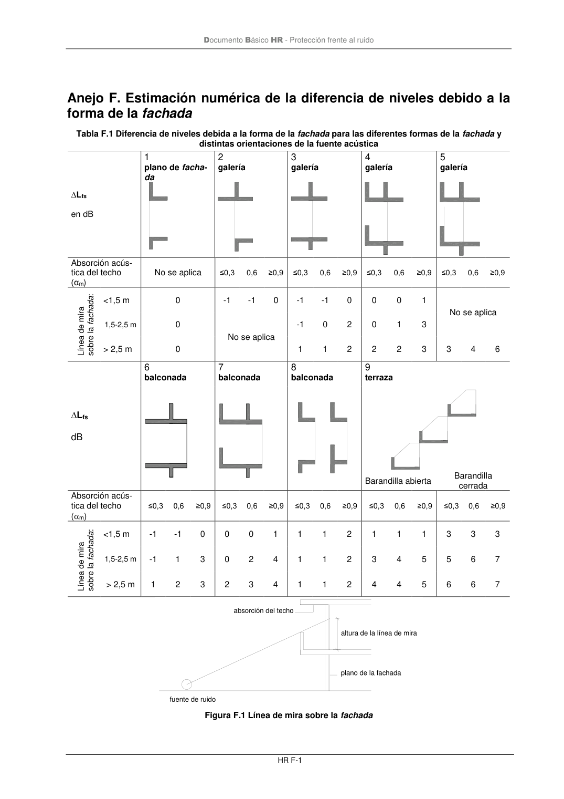
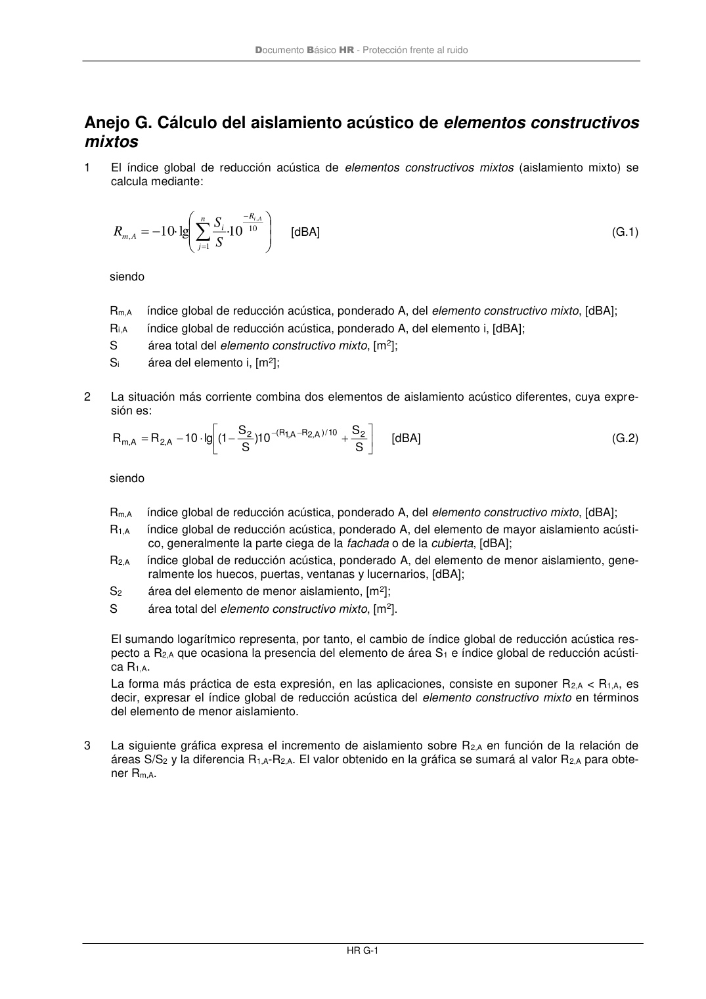

DB-HR · Anejo F. Estimación numérica de la diferencia de niveles debido a la forma de la fachada · versión 2019-12-20 · capa oficial
Formatos: JSON compacto · Markdown · PDF fuente
Ámbito del documento · texto del ámbito · documento y tablas
ID técnico a0115 · PDF pág. 65-67 · jerarquía no validada por persona · contrastado con el literal de la página 65 (marcador PDF); no validado por persona · padre: raíz
Anejo F. Estimación numérica de la diferencia de niveles debido a la forma de la fachada forma de la fachada Tabla F.1 Diferencia de niveles debida a la forma de la fachada para las diferentes formas de la fachada y distintas orientaciones de la fuente acústica ∆Lfs en dB 1 plano de facha- da 2 galería 3 galería 4 galería 5 galería Absorción acús- tica del techo (αm) No se aplica ≤0,3 0,6 ≥0,9 ≤0,3 0,6 ≥0,9 ≤0,3 0,6 ≥0,9 ≤0,3 0,6 ≥0,9 Línea de mira sobre la fachada: <1,5 m 0 -1 -1 0 -1 -1 0 0 0 1 No se aplica 1,5-2,5 m 0 No se aplica -1 0 2 0 1 3 > 2,5 m 0 1 1 2 2 2 3 3 4 6 ∆Lfs dB 6 balconada 7 balconada 8 balconada 9 terraza Barandilla abierta Barandilla cerrada Absorción acús- tica del techo (m) ≤0,3 0,6 ≥0,9 ≤0,3 0,6 ≥0,9 ≤0,3 0,6 ≥0,9 ≤0,3 0,6 ≥0,9 ≤0,3 0,6 ≥0,9 Línea de mira sobre la fachada: <1,5 m -1 -1 0 0 0 1 1 1 2 1 1 1 3 3 3 1,5-2,5 m -1 1 3 0 2 4 1 1 2 3 4 5 5 6 7 > 2,5 m 1 2 3 2 3 4 1 1 2 4 4 5 6 6 7 fuente de ruido absorción del techo altura de la línea de mira plano de la fachada Figura F.1 Línea de mira sobre la fachada Documento Básico HR - Protección frente al ruido HR G-1


PDF fuente redistribuible: copia fiel enlazada en esta página (SHA256 verificado).